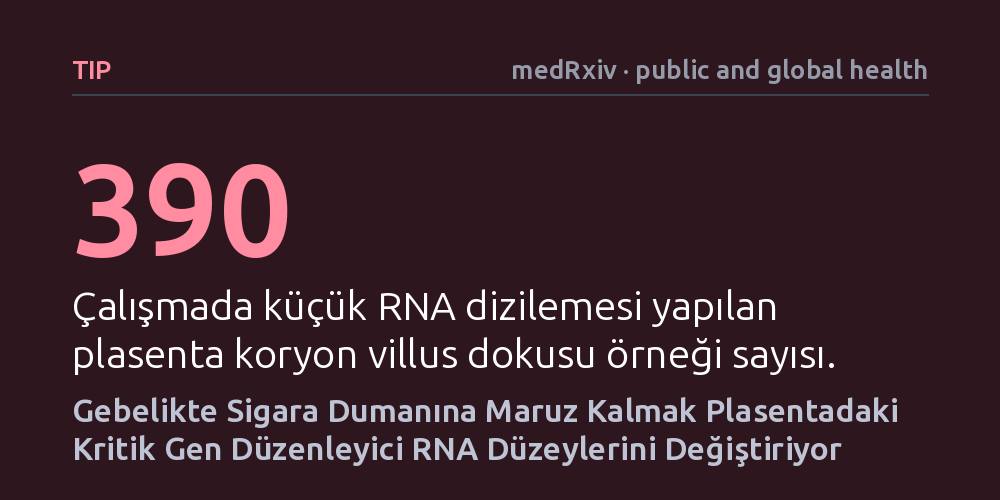

TIP · medRxiv · public and global health · 2026-10-20
Araştırmacılar, gebelikte sigara dumanı ve hava kirliliğine maruz kalmanın plasentadaki küçük kodlamayan RNA'ları nasıl etkilediğini 390 doku örneğinde inceledi. Sigara kullanımının plasentadaki belirli düzenleyici RNA seviyelerini anlamlı biçimde değiştirdiği, hava kirliliğiyle ise doğrudan anlamlı bir ilişki saptanamadığı görüldü.
Anne adayının maruz kaldığı tütün dumanının, fetüsün beslendiği plasentada gen ifadesini kontrol eden hücresel mekanizmaları doğrudan etkileyebildiğini gösterir.

Anne karnındaki bebeğin gelişimi dış dünyadan tamamen yalıtılmış bir ortamda gerçekleşmez. Annenin soluduğu hava veya maruz kaldığı tütün dumanı gibi çevresel kirleticiler, anne ile bebek arasındaki fizyolojik köprüyü kuran plasentaya kadar ulaşabilir. Plasenta sadece besin ve oksijen ileten pasif bir kanal değil, aynı zamanda dış etkenlere karşı hücresel düzeyde tepki veren son derece dinamik bir organdır.
Bilim insanları, bu çevresel etkilerin gen dizilimini değiştirmeden genlerin çalışma düzenini nasıl farklılaştırdığını anlamak için epigenetik süreçlere odaklanıyor. Hücrelerimizde protein üretimine doğrudan katılmayan ancak diğer genlerin ne zaman çalışıp susacağını denetleyen küçük kodlamayan RNA molekülleri bulunur. Bu moleküllerin gebelik sırasındaki çevresel baskılardan nasıl etkilendiğini ortaya koymak, erken gelişim evresindeki risklerin biyolojik kökenini aydınlatmak açısından önem taşır.
Araştırmacılar bu soruyu yanıtlamak için Barselona Yaşam Çalışması Kohortu (BiSC) bünyesinde doğum yapan kadınlardan alınan 390 koryon villus dokusu örneğini inceledi. Koryon villusları, anne kanıyla doğrudan temas halinde olan ve bebeğin gelişiminde kritik rol oynayan plasenta dokularıdır. Bu dokulardan izole edilen küçük RNA'lar yeni nesil dizileme teknolojileriyle taranarak kapsamlı bir harita çıkarıldı.
Çalışmada annelerin gebelik sürecindeki sigara dumanı maruziyeti anketler aracılığıyla belirlendi. Dış ortam hava kirliliği maruziyeti ise kentsel hava dağılım modelleri ve arazi kullanım regresyonları kullanılarak konut adresleri bazında tahmin edildi. İncelenen kirleticiler arasında ince partikül maddeler (PM2,5), azot dioksit ve siyah karbon yer aldı. Toplanan tüm moleküler ve çevresel veriler, olası karıştırıcı etkenler hesaba katılarak istatistiksel modellerle analiz edildi.
Yapılan taramalarda plasenta dokularında toplam 979 küçük kodlamayan RNA kümesi tespit edildi. Bu kümelerin üçte birini mikroRNA'lar oluştururken, piRNA ve snoRNA gibi diğer küçük RNA sınıfları da dokuda belirgin oranlarda bulundu. Elde edilen veriler, gebelikte sigara dumanına maruz kalmanın plasentadaki bazı kritik düzenleyici RNA'ların seviyesini belirgin şekilde değiştirdiğini gösterdi.
Özellikle fetal büyümede kritik öneme sahip 'DLK1-DIO3' adlı gen bölgesinde yer alan çok sayıda küçük çekirdekçik RNA'sının (snoRNA) ve bir piRNA'nın seviyesinin arttığı, buna karşılık miR-421 adlı mikroRNA'nın azaldığı belirlendi. Diğer taraftan, ölçülen hava kirliliği göstergeleri ile küçük RNA'lar arasında çoklu test düzeltmelerinden sonra istatistiksel olarak kalıcı ve anlamlı bir bağlantı saptanmadı.
Elde edilen sonuçlar, tütün dumanının plasentada sadece bilinen mikroRNA'ları değil, bugüne dek daha az incelenmiş olan snoRNA gibi diğer epigenetik denetleyicileri de etkilediğini ortaya koyuyor. Özellikle yalnızca anne ya da babadan gelen kopyası aktif olan izlenimli bölgelerin tütün dumanından etkilenmesi, hücresel mekanizmaların nasıl hedef alındığına dair yeni moleküler ipuçları sunuyor.
Yine de çalışmanın gözlemsel bir kohorta dayandığını ve doğrudan bir hastalık nedeni kanıtlamadığını göz önünde bulundurmak gerekir. Hava kirliliğinde istatistiksel olarak anlamlı bir etkinin görülmemesi kirliliğin zararsız olduğu anlamına gelmez; mevcut örneklem büyüklüğü ya da maruziyet modellemesinin hassasiyeti bu etkiyi yakalamaya yetmemiş olabilir. Çalışma, gebelikte tütün dumanından uzak durmanın önemini hücresel mekanizmalar üzerinden bir kez daha desteklemektedir.